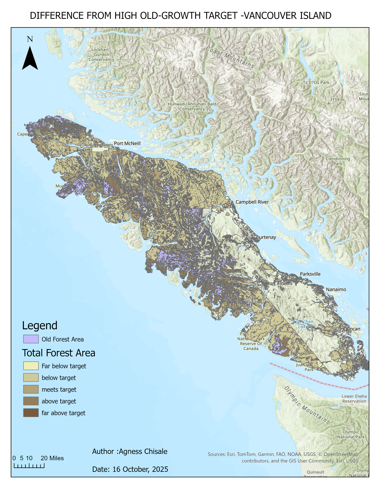
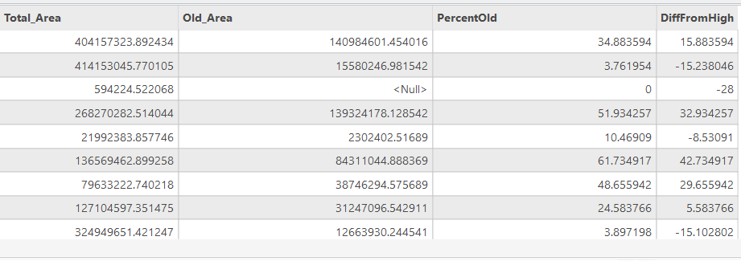

This project analyses the distribution of old growth forests across Vancouver Island, British Columbia, using forest inventory data and the BC Cumulative Effects Framework (CEF). The analysis identifies crown forest land, classifies stands by seral stage, and compares calculated old growth percentages against provincial targets by Landscape Unit and BEC subzone. Results are visualized as a cartographic map showing where forests fall short of, meet, or exceed old growth targets.
| Layer | Description | Source |
|---|---|---|
vancouver_island_vri | Vegetation Resource Inventory 2024 | BC Data Catalogue |
vancouver_island_own | Generalized Forest Cover Ownership | BC Data Catalogue |
vancouver_island_human_disturbance | CEF Human Disturbance (current) | BC Data Catalogue |
vancouver_island_landscape_units | Landscape Units of BC (current) | BC Data Catalogue |
| Tool | Purpose |
|---|---|
| ArcGIS Pro | Spatial analysis, field calculations, and map production |
| PostgreSQL / SQL | Querying and extracting data from the remote server |
| Python (ArcGIS Field Calculator) | Classifying seral stages and calculating old growth targets |
Forest inventory data was queried from the UBC PostgreSQL server and filtered to managed crown forests on Vancouver Island. Stands were classified into seral stages (Early, Mid, Mature, Old) using BEC zone-specific age thresholds. Human-disturbed areas were identified and reclassified as Early seral. Old growth area and total forest area were summarized by Landscape Unit and BEC subzone combination, and the percentage of old growth was calculated. A difference field was computed to show how each unit compares to the provincial high old growth threshold, and results were visualized as a graduated colour map.

Map showing the difference between calculated old growth percentage and provincial high targets, by Landscape Unit and BEC subzone

Summary table showing Total Area, Old Growth Area, Percentage Old Growth, and Difference from High Threshold